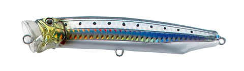
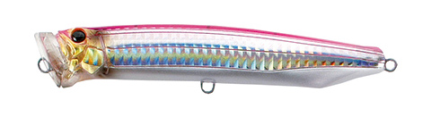
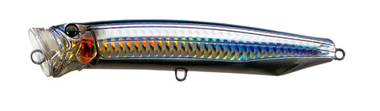
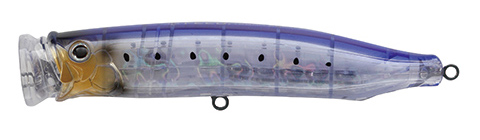

フィードダイビングウォブラー135
（FEED.DIVING WOBBLER CFDW135）
フィードダイビングウォブラー135（FEED.DIVING WOBBLER CFDW135）はTACKLE HOUSE（タックルハウス）のダイビングプラグです。
水面下、泡をまとってウォブリング。主なターゲットは、ヒラマサをはじめとするオフショアの青物です。連続したショートジャークで、水面直下を泡をまとってウォブリングで泳ぐ、ポッパーともダイビングペンシルとも違う個性を持ったプラグです。
CFDW135は、ショア・オフショアを問わず幅広く活躍するサイズです。175・150と同じくR-Unit2.0を搭載し、波間に漂う時も水と同調せず、ステイ時にも自然にアピールします。

画像出典:TACKLE HOUSE公式HP
スペック
- メーカー
- TACKLE HOUSE（タックルハウス）
- タイプ
- フローティング（サーフェイス）
- 全長
- 135mm
- 重量
- 42g
- フック
- ST-56#1/0
- リング
- H#7
- 搭載システム
- R-Unit2.0 Revolver・1.2mm厚3Dレーザーカット貫通ワイヤー
- ターゲット
- ヒラマサなどの青物
- 価格
- 2,800円
▼今すぐチェック

フィードダイビングウォブラー135の特徴
ポッパーでもダイビングペンシルでもない、泡をまとったウォブリング
-
泡をまとったウォブリング
連続したショートジャークで、水面直下を泡をまとってウォブリングで泳ぐ。ポッパーともダイビングペンシルとも違う動きでアピールする。
-
ほぼ垂直の浮き姿勢でテンポよく
テール部分にウェイトを集中させ、浮き姿勢はほぼ垂直。連続ジャーク後のわずかなステイでも一度しっかり水面に顔を出すので、テンポよい釣りができる。
-
ステイでも生命感を出すR-Unit2.0
ボディ横断面のウェイトルームで、ウェイト球が振り子のように動いたり軸を中心に回転したりする「R-Unit2.0 Revolver」を搭載。波間に漂う時も水と同調せず、ステイ時にも生命感を出す。
フィードダイビングウォブラー135の使い方
基本は連続したショートジャークで、水面直下を泡をまとわせながらウォブリングさせます。ジャークの後にわずかにステイさせると、一度水面に顔を出すので、ジャーク＆ステイをテンポよく繰り返しましょう。
フィードダイビングウォブラー135の得意な状況
水面から飛び出しにくく、荒れた状況にも対応するので、ショアからのキャスティングや、波のある日のオフショアで使いやすいサイズです。
ヒラマサなどの青物がポッパーやダイビングペンシルに反応しない時に、違う動きで口を使わせたい状況が得意です。
ワンポイント
シリーズの中では一番小さく軽いので、ショアのタックルでも投げやすく、小さめのベイトを食べている時にも合わせやすいサイズです。
フィードダイビングウォブラーのサイズの使い分け
| モデル | 全長・重さ | フック・リング・価格 |
|---|---|---|
| CFDW135（この記事） | 135mm・42g | ST-56#1/0・H#7・2,800円 |
| CFDW150 | 150mm・54g | ST66#2/0・H#8・3,000円 |
| CFDW175 | 175mm・70g | 別売・H#9・3,300円 |
※数値は公式ページより。各サイズの記事もあわせてご覧ください。
オススメカラー
フィードダイビングウォブラーは全15色＋ナローリフレクトカラー5色（各サイズ共通）。そのうち4色を紹介します（画像は公式のカラーチャートより）。

07.イワシ・スリットHGまず1つ選ぶならこの色。イワシを食べている時の定番。

03.ピンクバック・スリットHG背中のピンクで視認性が高い。朝マヅメなどに。

09.セグロカタクチスリットHGカタクチイワシを食べている時に。

19.クリアイワシ透け感のあるイワシカラー。日中の澄んだ潮に。
画像出典:TACKLE HOUSE公式HP
フィードダイビングウォブラー135に似ているルアー
-
 フィードダイビングウォブラー150
タックルハウス
詳細はこちら＞
フィードダイビングウォブラー150
タックルハウス
詳細はこちら＞
同じシリーズの150mmモデル。シリーズのファーストモデル。
-
 フィードダイビングウォブラー175
タックルハウス
詳細はこちら＞
フィードダイビングウォブラー175
タックルハウス
詳細はこちら＞
同じシリーズの175mmモデル。ダイビングペンシルとポッパーの特徴を併せ持つ大型モデル。
-
 フィードポッパー121
タックルハウス
詳細はこちら＞
フィードポッパー121
タックルハウス
詳細はこちら＞
同じフィードシリーズのポッパー。ポップ音と飛沫で誘いたい時に。